10m
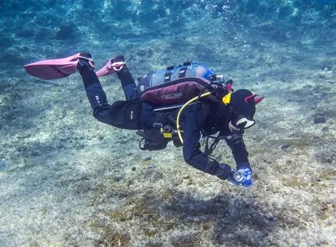
Nurkowanie próbne
Pierwszy oddech pod wodą z instruktorem, w płytkiej zatoce.
- Od 10 lat, bez doświadczenia
- Około 30 minut pod wodą, do 10 m
- Sprzęt i instruktor w cenie
- Koszt odliczamy od kursu OWD
cena60 €
Zapytaj 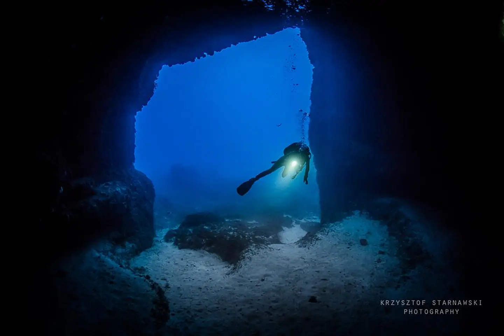
Mieszkamy na Gozo na stałe. Uczymy w PADI i TDI/SDI, maksymalnie trzy osoby na instruktora, i nurkujemy z ponad 60 miejsc wokół wyspy. Ty odpoczywasz i nurkujesz, my zajmujemy się resztą.
Zapytaj o terminNurkujemy 365 dni w rokuTransfery, zakwaterowanie i sprzęt na miejscuOpieka po polsku od pierwszej wiadomości
Od pierwszego oddechu pod wodą po nurkowania na 40 metrów. Szkolimy przez cały rok, indywidualnie i w małych grupach, w tempie dopasowanym do Ciebie.
10m

Pierwszy oddech pod wodą z instruktorem, w płytkiej zatoce.
18m
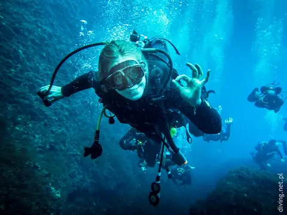
Pierwszy stopień: certyfikat ważny dożywotnio na całym świecie.
30m
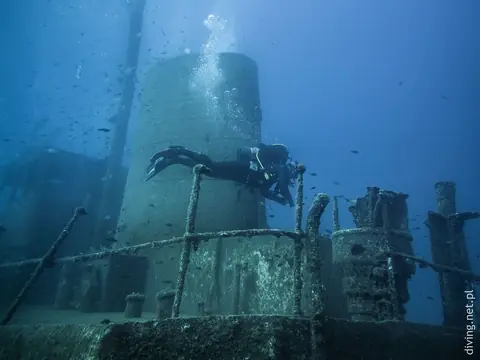
Nurek zaawansowany: od razu po kursie OWD.
40m
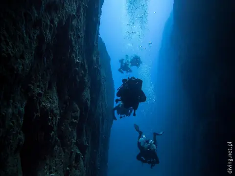
Nurkowanie na powietrzu do 40 metrów, w ciepłej i przejrzystej wodzie Gozo.
Podręczniki w PDF i certyfikaty elektroniczne są w cenie każdego kursu. Do kursu OWD dajemy na czas szkolenia kompletny sprzęt.
Pozostałe kursy wymagają własnego sprzętu albo odpłatnego wypożyczenia. Kurs indywidualny: +50% ceny. Advanced Nitrox: dodatkowo gazy dekompresyjne i sprzęt.
Bez ukrytych opłat. Dowóz na miejsca nurkowe w cenie kursu OWD.
Zapytaj o termin kursuKrystalicznie czysta woda, jaskinie i groty, łatwo dostępne wraki. Gozo to jedno z najlepszych miejsc do nurkowania w Europie, a my pokażemy Ci je od lokalnej strony.
Zdjęcia z naszych nurkowań. Przesuń palcem albo myszą, kliknij, żeby powiększyć.
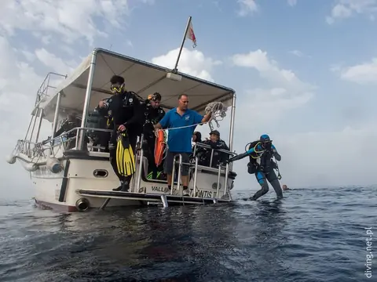
Nie. Prowadzimy kursy również dla osób bez żadnego doświadczenia, a na początek polecamy nurkowanie próbne.
Tak. Opieka i szkolenie są w języku polskim, od pierwszej wiadomości do końca wyjazdu.
Tak. Działamy zgodnie z obowiązującymi standardami i dobieramy miejsca do poziomu uczestników.
Nie. Pomagamy w planowaniu przylotu, organizujemy transfery na miejscu, zakwaterowanie i plan dnia.
Jesteśmy polskimi rezydentami na Gozo. Organizujemy kursy i wyjazdy nurkowe połączone ze zwiedzaniem wyspy, spokojnie i w kameralnej atmosferze.
Co roku organizujemy wyjazdy nurkowe po świecie dla naszych kursantów i klubowiczów. Najbliższe terminy:
Podwodny świat Majów, ich zabytki oraz smaki, zapachy i kolory tej krainy.
Safari z ponad 20 nurkowaniami w jednym z najpiękniejszych rejonów świata nurkowego.
Ciepłe morze i najlepsze warunki nurkowe właśnie w drugiej połowie stycznia.
Oficjalne rozpoczęcie sezonu: już ciepło i jeszcze zielono, przejrzysta woda.
Długi weekend Bożego Ciała, m.in. Hephaestus i P29. Można skrócić do 4-5 dni.
Środkowy Atlantyk, widoczność sięgająca nawet około 50 metrów i bogate życie pelagiczne.
Trasa Północna i Brothers Islands, dla nurków z Deep Diver i technicznych.
Ciepła woda 26-29°C, rekiny, manty i żółwie.
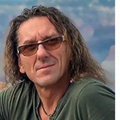
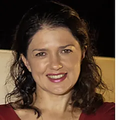
Open Water Scuba Instructor PADI, nurek techniczny i jaskiniowy
+356 9912 2603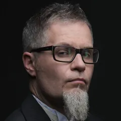
Sport Diving Instructor ASTD, nurek techniczny PSAI
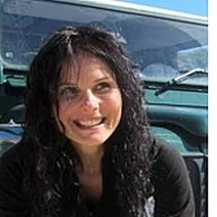
Open Water Scuba Instructor PADI, organizatorka wyjazdów językowych
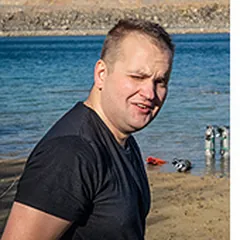
Sport Diving Instructor ASTD
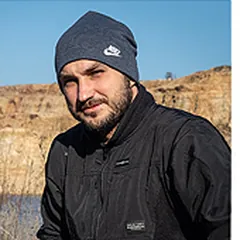
Instruktor TDI/SDI
Ktoś gdzieś napisał, że nurkowanie jest niebezpieczne, bo wciąga. Dla nas to pasja i nie chcemy się z niej nigdy wyleczyć.
Już na podstawowych kursach wprowadzamy dobre praktyki z nurkowań zaawansowanych, dlatego nasi kursanci na poziomie OWD mają doskonałą pływalność i są przygotowani na większe wyzwania. Szkolimy na nowoczesnym sprzęcie, a na Gozo współpracujemy z Atlantis Diving Center.
Napisz, kiedy chcesz przylecieć i co Cię interesuje. Odpowiemy po polsku na wszystkie pytania, bez zobowiązań.
Napisz na WhatsApp